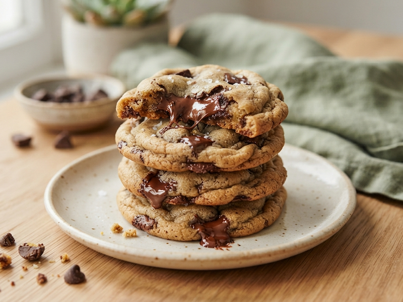
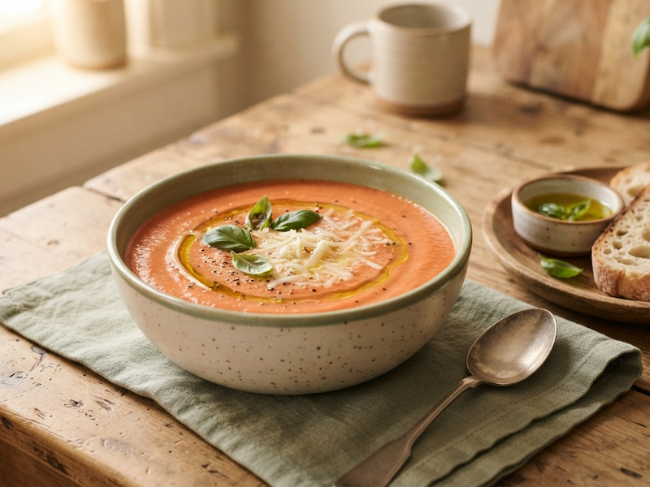

Tem uma receita especial? Ela merece um lugar aqui.
Compartilhe com a gente e inspire outras pessoas na cozinha.
Publicar minha receitaCompartilhe com a gente e inspire outras pessoas na cozinha.
Publicar minha receitaSeparei receitas rápidas pra salvar o seu dia.
Ver receitas rápidasDescubra o que levar pra aproveitar o dia ao ar livre sem esquecer nada.
Ver dicas de piqueniqueO Holy Kitchen! nasceu como um projeto pessoal de estudo — um jeitinho de aprender programação cozinhando ideias na tela também. Aqui você encontra receitas escolhidas com carinho e dicas pra facilitar o seu dia na cozinha.

Crocante por fora, macio por dentro. Simplesmente irresistível.

Conforto em forma de sopa, pra qualquer dia frio (ou não).

Porções certas, sem sobra e sem desperdício. Cozinhar sozinha (ou a dois) também pode ser gostoso.

Um jeitinho simples de saber o que você tem, evitar desperdício e facilitar a vida na hora de cozinhar.